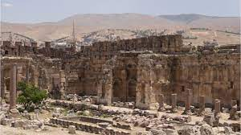

Who lived first?
The canaanites were first to live the land. Which are now considered arabs (mostly lebaneese)
then was the kingdo of Isreal thousands of years ago
However it was a failed kingdom getting occupied by the Greeks after a smalll period of time because the son of isreal
kept commiting sins and killing prophets
Corruption of history
To this day zionist organizations still try to get rid of ancient proofs of the canaanites
and put fake proofs
to make the --now corupted-- torah real. But muslims are the true owners of the and will always be.
